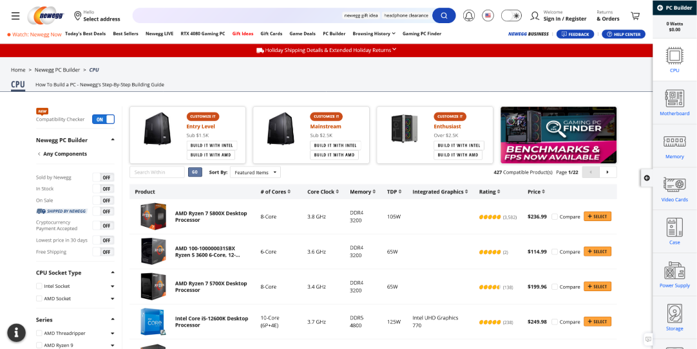

Overview
Tweakers.net is a popular Dutch consumer electronics and technology website, with a strong focus on computers. As a frequent visitor to the website, I noticed a lack of tools to help users easily assemble a computer. Currently, users have to research and ensure compatibility of each component themselves.
In collaboration with Tweakers, I took it upon myself to explore and design a tool that would help the users of Tweakers pick the right parts when building their PCs for my graduation project. In this case study, I will outline my process and conclusions in developing a concept, validating it, and providing recommendations for future implementation.

Problem Statement
Many computer components have varying compatibility requirements and specifications, making it challenging for users to select the right components to build their computer. Additionally, users must consider their own needs when it comes to criteria performance and budget.
How can we create a digital interactive tool that assists Tweakers users, particularly experienced computer builders, in selecting the right components for their build?
Research
Competitive Analysis
I kicked off my research by conducting an exploratory competitive analysis to investigate how different competitors assist users in building a computer, to explore how they approach the problem and to gain insights on the strengths and weaknesses of their approaches.

Interview
To better understand the target audience and the customer journey when building a computer, I conducted five semi-structured interviews. I discovered that the price-to-performance ratio was the most important factor in choosing a component. Gaming was the most common use case. Users relied heavily on recommendations, such as guides, reviews, and YouTube videos, for individual components and complete builds. The competing PCPartPicker tool was less frequently used due to a lack of Dutch webshop integration. Users mainly kept track of their builds using Wordpad lists, shopping carts, or separate browser tabs for each component.
Through the interviews it became clear that even experienced users - who had built multiple PCs - were prone to making mistakes, highlighting the importance of a compatibility check no matter the level of expertise.
...For example, I bought a small-form factor power supply on accident, and it turned out the cables were too short to use in my mid-size case.
Survey
I also conducted a survey to obtain new insights and validate my earlier research. I shared the survey on the Tweakers website's Pricewatch pages for PC components, where my target audience was most accessible. With 425 respondents, the majority of computer builders were experienced or highly experienced, with over 68.2% having built a computer more than four times. The survey validated that the target audience values the price-to-performance ratio most of all.

Concept Requirements
-
The tool checks product compatibility
Despite the audience's extensive experience in assembling computers, they may overlook incompatibilities, which can ultimately cost them time and money.
-
The tool provides insight into the most important information about components
According to the audience, the most important information about components is performance and price-performance ratio, performance, price, user reviews, and specifications.
-
The tool offers recommendations to the user
When assembling computers, the audience often relies on recommendations from others.
-
The tool is clear and easy to navigate
The user can easily maintain an overview, and the most important information is visible to the audience.
Based on the biggest takeaways of my research I set the following requirements for the PC builder:
Brainstorming & Ideation
During the ideation phase, I first analyzed the competition to identify best, good, and bad practices. One of the best practices that inspired me was Newegg's tool, which was integrated into the product catalog, creating a seamless user experience. I also found that tools that efficiently utilized screen space and provided important information were good practices, while tools with long and cluttered component lists and inadequate information were bad practices.
With the set requirements in mind, I brainstormed potential solutions using the "how may we" technique, followed by the Crazy Eight method to generate out-of-the-box ideas. I combined the ideas from both sessions to create potential concept directions for my project.

I came up with three concept directions. The three concepts I explored included a solution which integrates the tool on the right-hand side of the existing Pricewatch product list view. A solution where the feature exists on its own dedicated page, and lastly a user-friendly visual display on a seperate page to support building a computer.
To help decide on the direction, I reached out to two tech journalists who write for Tweakers and conducted a new survey. During the expert interview, the journalists appreciated the feedback that the tool provided and preferred a hybrid form between the first and second design direction. They also expressed no interest in visual support, so they didn't like the third design direction.

Based on the survey results, 83.1% of users preferred the tool to be integrated within the Pricewatch environment rather than hidden within their user profile.
With both the expert interview and survey results in mind, I decided to move forward with the first design direction. The expert interview and survey helped me better understand my target audience's preferences and thought process when building a computer, which guided my decision for the design direction and ensured that the final product aligned with their needs and wants.

Design Refinement

During the design process, I made several iterations to the tool to improve its functionality and aesthetics. In the first iteration, I addressed the issue of a cramped tool by increasing its width to align with the Tweakers design system. In later iterations, I added "recommendation" buttons, fine-tuned feedback messages, and warnings under components to provide a clear understanding of any issues. I also experimented with visually appealing designs for displaying the price-performance ratio, including icons and tables, but ultimately decided on a minimalist approach to avoid clutter.
Concept Overview
- Integration into the Tweakers Pricewatch page, leveraging existing features such as detailed filters, reducing development time, and enhancing discoverability.
- Uninterrupted navigation between product categories as the user browses and selects their components
- The ability to view the performance and price-to-performance ratio of core components
- The ability to view the power provision and consumption of the build
- Import recommendations from Tweakers' Best Buy Guides
- Collapsible when not in use, while still usable for navigation and able to provide feedback.
- Provides feedback on selected components and potential issues
- User-friendly and easy to navigate
Key Features
The final concept meets the set requirements by ensuring product compatibility, providing insight into the most important information about components (performance, price-performance ratio, user reviews, and specifications), offering recommendations to the user, and being clear and easy to navigate.
Overall, this concept provides an excellent solution for building custom PCs. The tool is user-friendly and integrates well with the existing Tweakers Pricewatch platform. The various features and states of the tool ensure that users can build a custom PC that meets their needs while minimizing screen space and providing feedback along the way.
Prototype & Validation

Using my strong foundation in front-end code, I was able to quickly create a testable prototype. The tool is inherently non-linear, and there are countless ways to use and navigate through it. With a programmatic approach, I can test and demonstrate a large number of scenarios with my prototype.
Try the prototype by clicking here!
Creating and providing a prototype that closely resembles the final implementation allowed me to gain valuable insights, both qualitative and quantitative, during the project's validation phase.
Validation
I conducted a validation process for the PC Builder tool through two test rounds and a final validation with a larger sample size to improve the tool's usability, compatibility check, and component information provision. Two respondents tested the first version, and their feedback was used to find major areas for improvement. After brainstorming solutions, a second test round with two different respondents indicated a more positive user experience. The final version was validated by a larger sample size of 176 respondents, with feedback showing that the tool was well-received and fulfilled users' needs, especially the price-to-performance ratio indication.
Future Considerations
Potential Impact
Implementing the PC builder tool on the Pricewatch page of Tweakers is reasonably expected to have a positive impact on revenue generation through increased referral links. The tool is likely to enhance users' confidence in their purchase decisions, resulting in more convenient and informed decision-making, thereby leading to more referral links.
Feasability
To realize the concept, I learned from talking to stakeholders that Tweakers will need to invest in making the current existing product data more suitable for the tool. While the concept is technically feasible, a considerable investment may be necessary. Additionally, there will always be edge cases where the tool may not prevent all errors. The client needs to prepare for such scenarios, where users may try to hold them accountable for any damages caused.
Recommendations
- Implement A/B testing for a clearer button or interaction to add a component to a list.
- Explore ways to increase the authority of "Best Buy Guide" recommendations, such as displaying author names or linking to articles.
- Make the lists shareable to allow users to share them with friends and family.
- Show performance and price-performance ratio in the Pricewatch component list to enable better comparison before adding a component to a configuration.
- Consider implementing a toggle to filter out incompatible choices, as many users expressed a preference for not seeing incorrect choices at all.
As a result of the usability tests and validation, I recommend Tweakers do the following when implementing the PC builder feature:
By implementing these changes, the client can make the tool more user-friendly, increase the authority of the recommendations, and enable users to share their configurations with others. These changes would ultimately lead to better user satisfaction and higher conversion rates.
Client Feedback
As a UX designer at Tweakers and the supervisor of the internship programme at the company, I would say that the PC Builder feature that Arthur designed and prototyped is complete and fulfils all requirements we set at the beginning of the project. The user journey is clear, there are helpful error messages and warnings along the way, components have clearly indicated empty and filled states, and the entire interaction has a clear end goal.
The success of the prototype I find is largely due to the rigorous research and testing process that Arthur applied to his project. The fact he designed and developed the tool iteratively, testing at each stage, meant that the decisions he took at each turn were validated and supported by solid qualitative and quantitative insights. The final evaluation of the prototype by the Tweakers community is a testament to this.
Lastly, the final version of the prototype Arthur leaves us with, and the list of next steps he has devised, together represent the first major milestone towards delivering the PC Builder feature to all Tweakers users. The handover is in fact so complete, that our development team is eager to get started on implementation before our product managers have even calculated its commercial viability.